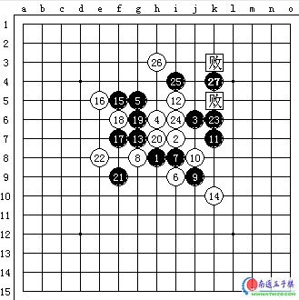

长星局对局双方互评[本站推荐阅读]
#1 <font color="green">长星局对局双方互评[本站推荐阅读]</font> 作者：有志青年 发表时间：2007-1-10 21:12:20
[有志注：此文转载自裁决殿站点两篇文章，分别是同一个对局的双方裁决殿★秘书长和longfeixuan所写]
首先看裁决殿★秘书长的评述：
这局是前段时间和个人下的。
下了以后，觉得这盘不错，值得研究下下。当时叫对家复盘，然后，自己复。结果，速度比对家快。对家相当奇怪，我说，这盘是用心思去忽悠的，所以，印象自然深刻了。
废话不说，看对局。
（经过一个礼拜，居然还记得，我佩服我自己下下。）

长星开局。
八婆下下。
所谓四大平衡，说的是，松月（二打），瑞月（二打），斜月（二打），以及疏星。其中，前面三个的一打，都已经完结，呃，斜一完结，我不会，水平问题。
如今，这个斜指，黑下了长星。白4最强。要是下1下面，就还原成了疏的平衡。而现在，这个情况，白在5手保留了二打，局面是白优。
值得注意下，这个4也就这个5能下下了，其余的，差不多都是挂的。
通常来说，我忽悠人都喜欢下这个4。呃，我开这个也是做好给人交换的准备咯。
注意下6手。当然，你要是长2，4那个眠三也不是不可以。这个白6是我个人的爱好。显然，对家也有和我相同的爱好。
还有，7手的位置有点讲究。要是下10那里，马上就给抓了。不得不承认，白10的位置是显然的拉出去的好手，可是，占了那里就挂，相比之下，还是委屈下下比较好。
8下10那里也是可以的。下这个地方比较保险。
9手是一种选择，局面差不多可以说是两分了，黑白都可以下的。
11，防，也可以说是做，目的是想把子力调到下面，与左边配合。白12，发现黑的意图，马上阻止。黑13，防守，也是抢了白拓展的点。
如是，到14手。
就事论事而言，白14是一手攻守兼备的一手。防住黑活二倒在其次，大家观察下下，14的位置有2，4，10这个眠三配合，而且，一旦跳个活二，马上就可以与8配合起来。白全盘棋子全部调动起来，没有废子，局面不错。
现在，黑出现一个选择的问题。
是进攻还是防守？
防守的话，局面会比飞机场还要平，大有耗到和棋的架势。当然，这也不失是一种下法。
进攻的话，下面接着就是一个问题，进攻点如何选择？进攻方向在什么地方？
看实战之前，我们看看上面一楼的棋谱，我说了，白14位置不错，然后，如何如何……
下面一个问题，白可以马上杀吗？
答：不可以。
白或许可以取得优势，但是，还很漫长。
那么，黑完全有机会，有时间，有理由去进攻，而不是消极防守。拼拼进攻的速度。

这个15，算是这盘的一个转折点，也是我喜欢的一手。
这手下了，黑94在表态，我拼了，进攻，不去防守。
下面，我们看看黑为什么选择在这个地方。
从大局来看，白在左边的子比较多，上面的话，黑白大体相当。黑进攻当然不会选择在白子多的地方。
从局部来看，这个位置，先是5，15做了个活二，再和7，9形成了一个眠三（这个三远了点，但是，还是三）。如果白不理的话，黑占据16的位置，与1，3取得配合的话，那就不是进攻不进攻的问题了，而是杀不杀的问题了。
所以，16，白不得不防守。
我们再回头看看14，和15两手。都是做，但是，白的进攻比较缓，黑全然不顾，而且还没事。黑进攻节奏比较快，白不得不理。虽然很委屈。
这样一来，全局发生了一个转折性的变化。
对局的意识。
黑采取进攻，白采取防守。

白16防守。
黑17，可以说是进攻。也可以说是防守。
多说几句。有时候，我们进攻的时候，特别爽，不断冲啊，不断做啊，偏偏忽略了对手的反击手段，直接导致了棋局的失败。所以，希望大家在日后的对局之中，多多注意对手。毕竟，对手也不是吃素的。进攻的同时，也要注意下下防守。
17的进攻，这个是废话。简单的两个活二。
17的防守。焦点，焦点，往左边移动，移动……看清楚咯，14，14可不是什么善良的手段，人家憋着一肚子气等着发泄呢。2，4，10眠三跳冲下下，再和8活三联络下下（就是下1上面那点），不说有杀吧，这么折腾下下，白完全可以把子力带到右边，很具有威胁。
不过呢，17之后，抱歉，威胁没了，白啊，老实跟黑后面转悠吧。
18，防黑活二，自己做活二。
19，冲四，防白活二，与17，做活二。
21，防活二，也可以说是下19之前就想好了的配合手段。一旦黑占据了22那点，黑棋完全可以向外拉，而且，白防守相当困难。
敌之要点，己之要点。
22手，当
#2 长星局对局双方互评〔longfeixuan〕 作者：有志青年 发表时间：2007-1-10 21:33:04
接着看longfeixuan的评述：
我现在以白方防守的角度看下这个对局。

长星开局，5手的确只有A点和B点这两打可下了，其余都是黑败。
B点以后的变化还没有完全进行下去，从以前的平衡纠缠，到现在的白略优，甚至有人提出白胜的观点都有。
而现在普遍供认的是白有优势，但不明显，需要进入中局左右才确定优势。
一般来说，黑9最强位在K7，也就是一般认为的长星定式（其实，对于长星这种平衡局来说，很难说定式就是唯一的手法）。
实战中，黑9给在了J9。可下。
对于这个9来说，有些谱上认为这个10是正招。
继续看实战，从10手到13手，充分体现了开局争二的思想，都是活二档二。到了13手，盘面非常平。这时，白有一个眠三，黑有一个活二，白的目标其实比较明确了，挡住这个黑的活2（7-9）并且争取和白的眠三（4-2-10）取得联系。至于白14能否在H7继续自己的挡二活二呢？我不赞同，黑15=I6，白要想继续拿着先手做棋就不大可能了。所以，实战还是选择了14=K10。
这个15有点出乎意外，局面两分。黑上白下。这个时候，白棋考虑的就是速度或者优先的问题。
以前有人提到过，在做计算的时候，先算自己是否有VCF，没有再算对方是否有VCF。对方也没有的话，计算自己是否有VCT，没有再算对方是否有VCT。都没有的话，算自己是否有下一步VCT的可能，没有再计算对方下一步VCT的可能。等等。
回到棋面，白没有VCT，而黑是有VCT的。黑的VCT可以通过A点等来实现。白虽然下面可以在I10等点来进攻，但是问题是攻不出来的话，不仅浪费了资源，也可能失去防守的先手。所以白选择防守。
白选择防守的话，防点在哪？
C点的价值都不大，B点以后黑E6可以把白包在里面，白非常不舒服。
黑17是对黑15的思路一种延续。这两个看上去有围棋的味道的落子，其实连接性很强。
继续看白防点，两个B点我都不喜欢，所以选择实战的点。不过实战的点是不是最好，很难说，反正看个人习惯了。
当然，这个时候黑还是只有优势，但不能胜，单纯在角落硬杀，不可取。19和21的过度使得黑的攻击方向转移到了左边（或是说左偏下）。白22跟进，掐灭黑的势头。
当然，白22如果选择H5就有点冒险了。黑23一子通三路，白不得不再次跟进。当时，在白看来，这个23非常头痛。 24有点不甘心的架势，当然也是通过增加眠三来压一下黑的气势。 25顺利拿到自己想要的点，左右联系。 26先把一路联系掐断再说。（白还是比较担心13-19-5的眠三）另外，又是一自己的眠三形成。的确，如对方所说，24和26的位置构成非常好。好比，黑的一记重拳，打在了白的棉花上，白看似轻漂漂的两手，却有效地限制黑的空间范围。连接和范围，都是进攻的必需条件，黑的连接确实很多，但是空间呢？还是比较局限。
另外，这几手，也许最强，但都不是唯一的手段。分之比较多，不深入分析了。
27以后，白单防已经防不住了。

具体变化见三楼图一
先做一手长连再说。 30跟着压住那条眠三。到这里，黑继续有优势，并且很大。
32的确唯一了，我悔了一下。。。
具体变化见三楼图二
34单防效果还是很差，实战先活一手三，36基本处理干净。
具体变化见三楼图三
36以后，37在右边机会还是有的，但是要想杀干净，还是有一定难度的。
具体变化见三楼图四
对战机的捕捉，黑棋还是比较敏感的，所以37成功转战左下。39
#3 长星局对局双方互评〔longfeixuan互动分析谱〕 作者：有志青年 发表时间：2007-1-10 21:40:50
#4 Re:长星局对局双方互评 作者：longfx 发表时间：2007-1-11 13:37:20
 原作者来逛一下~
原作者来逛一下~
#5 Re:长星局对局双方互评 作者：gx1980 发表时间：2007-1-11 15:54:01
第一盘棋的16手为什么白要选择防守呢？走第6手正上，与14和8形成双活2，同时做43，是不是可以杀了黑呢？
［ 有志青年 于 2007-1-16 19:34:19 时奖励此帖[金币加 20 威望加1］
#6 Re:长星局对局双方互评 作者：yuelee 发表时间：2007-1-11 16:35:41
确实是好贴~~~学习了 ^_^
有志这里搞的越来越好了哦~~~~~~~西西~~~~厉害！
#7 Re:Re:长星局对局双方互评 作者：gx1980 发表时间：2007-1-16 16:06:40
请有志青年回复一下
#8 Re:Re:长星局对局双方互评 作者：有志青年 发表时间：2007-1-16 16:42:33
引用：
原文由 gx1980 发表于 2007-1-11 15:54:01 :第一盘棋的16手为什么白要选择防守呢？走第6手正上，与14和8形成双活2，同时做43，是不是可以杀了黑呢？
我这边算了一下白16走6正上方，是优，不过我没有能算到最后的杀。
回头让longfeixun亲自来回答这个问题
#9 Re:Re:Re:长星局对局双方互评 作者：longfx 发表时间：2007-1-16 18:43:12
引用：
原文由 有志青年 发表于 2007-1-16 16:42:33 :引用：
原文由 gx1980 发表于 2007-1-11 15:54:01 :第一盘棋的16手为什么白要选择防守呢？走第6手正上，与14和8形成双活2，同时做43，是不是可以杀了黑呢？
我这边算了一下白16走6正上方，是优，不过我没有能算到最后的杀。
回头让longfeixun亲自来回答这个问题
优势？不觉得啊。
我在文中提到过速度的问题，15手已经做出VCT了，白要做出连续的VCF，可能吗？
不可能，还不如，保留自己的资源。
比如，到这里以后，白还有办法吗？还是只能去防守啊。浪费了自己再去防守，值得吗？
#10 Re:长星局对局双方互评[本站推荐阅读] 作者：有志青年 发表时间：2007-1-16 19:33:49


#11 Re:长星局对局双方互评[本站推荐阅读] 作者：极地剑客 发表时间：2007-2-5 13:09:01
少少大侠无敌与天下！
#12 Re:长星局对局双方互评[本站推荐阅读] 作者：极地剑客 发表时间：2007-2-6 2:02:54
白16。。。#13 Re:长星局对局双方互评[本站推荐阅读] 作者：天堂的银元 发表时间：2007-2-12 18:57:45
好帖子！顶！#14 Re:长星局对局双方互评[本站推荐阅读] 作者：王四海 发表时间：2007-3-5 13:29:07
37手黑就可胜了，在E6点冲四。白就死了，说什么呢？不信，大家可以自己摆摆。#15 Re:长星局对局双方互评[本站推荐阅读] 作者：news 发表时间：2007-3-6 18:32:57
 谢谢！
谢谢！
#16 Re:Re:长星局对局双方互评[本站推荐阅读] 作者：yuelee 发表时间：2007-3-13 14:57:41
引用：极地想说什么？？？这个16。。。。。
原文由 极地剑客 发表于 2007-2-6 2:02:54 :
白16。。。
#17 Re:长星局对局双方互评[本站推荐阅读] 作者：gerbo 发表时间：2007-3-27 1:32:10
http://www.caijuedian.com/bbs/dispbbs.asp?boardID=8&ID=2993&page=1#18 Re:长星局对局双方互评[本站推荐阅读] 作者：越狱行辕 发表时间：2008-10-12 22:53:16
好多图看不见了［ 逆刃 于 2008-10-12 22:57:57 时奖励此帖[金币加 20 威望加1］
#19 Re:长星局对局双方互评[本站推荐阅读] 作者：我爱五子棋伯园 发表时间：2008-10-14 14:07:29
长星局让我见识到了#20 Re:长星局对局双方互评[本站推荐阅读] 作者：岳麓小棋后 发表时间：2009-3-25 22:10:08
这个帖子的图片咋不能显示，还是我电脑有问题？#21 Re:长星局对局双方互评[本站推荐阅读] 作者：可乐可口 发表时间：2009-6-15 11:57:51
一楼图片看不到……#22 Re:长星局对局双方互评[本站推荐阅读] 作者：星期十三 发表时间：2009-7-20 23:20:17
16手I10直接杀#23 Re:长星局对局双方互评[本站推荐阅读] 作者：星期十三 发表时间：2009-7-20 23:28:17
汗，原来是几年前的老帖，不过白16胜是肯定的了，17手的唯一点在16的左边，18手再14下边必杀